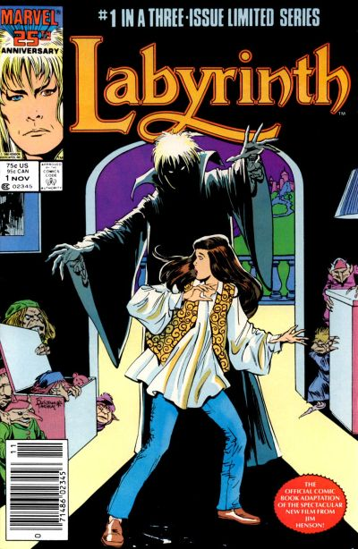

Labyrinth is a 1986 British-American musical dark fantasy adventure film directed by Jim Henson, executive-produced by George Lucas, and based upon conceptual designs by Brian Froud. The film revolves around 15-year-old Sarah's (Jennifer Connelly) quest to reach the center of an enormous otherworldly maze to rescue her infant brother Toby, whom Sarah wished away to Jareth, the Goblin King (David Bowie). With the exception of Connelly and Bowie, most of the film's significant characters are played by puppets produced by Jim Henson's Creature Shop.
The film started as a collaboration between Henson and Froud, with ideas for the film first being discussed between them following a screening of their previous collaboration, The Dark Crystal. Terry Jones of Monty Python wrote the first draft of the film's script early in 1984, drawing on Froud's sketches for inspiration. Various other scriptwriters, including Laura Phillips (who had previously written several episodes of Fraggle Rock), Lucas, Dennis Lee, and Elaine May, subsequently rewrote and made additions to the screenplay, although Jones received the film's sole screenwriting credit. Labyrinth was shot on location in Upper Nyack, Piermont and Haverstraw in New York, and at Elstree Studios and West Wycombe Park in the United Kingdom.
The New York Times reported that Labyrinth had a budget of $25 million. The film was a box office disappointment, grossing $12.9 million during its U.S. theatrical run. The commercial failure demoralized Henson to the extent that his son Brian remembered the time of the film's release as one of the most difficult periods of his father's career. It would be the last feature film directed by Henson before his death in 1990.
Although it was met with a mixed critical response upon its initial release, Labyrinth has since gained a large cult following. A four-volume comic sequel to the film, Return to Labyrinth, was published by Tokyopop between 2006 and 2010. In 2012, Archaia Studios Press announced they were developing a graphic novel prequel to the film. In January 2016, it was announced that a reboot was in development, which was later denied by screenwriter Nicole Perlman, describing it instead as a "spin-off" in the same fictional universe.

Publisher: 1986 Marvel
Script Adaptation: Sid Jacobson
Pencils: John Buscema; Romeo Tanghal
3 issue movie adaptation.